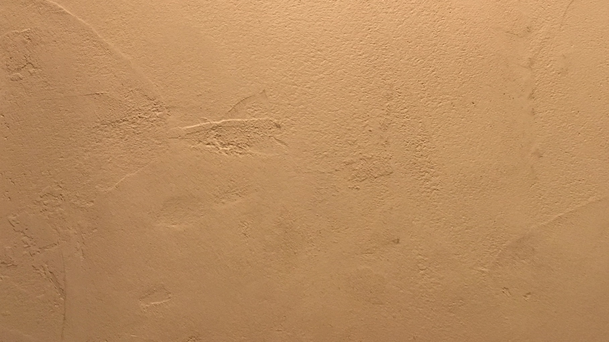

あのイーハトーヴォのすきとおった風、夏でも底に冷たさをもつ青いそら
郊外のぎらぎらひかる草の波。
またそのなかでいっしょになったたくさんのひとたち、ファゼーロとロザーロ、羊飼のミーロや、顔の赤いこどもたち、地主のテーモ、山猫博士のボーガント・デストゥパーゴなど、いまこの暗い巨きな石の建物のなかで考えていると、みんなむかし風のなつかしい青い幻燈のように思われます。
では、わたくしはいつかの小さなみだしをつけながら、しずかにあの年のイーハトーヴォの五月から十月までを書きつけましょう。
五月のしまいの日曜でした。わたくしは賑にぎやかな市の教会の鐘の音で眼をさましました。もう日はよほど登って、まわりはみんなきらきらしていました。時計を見るとちょうど六時でした。
わたくしはすぐチョッキだけ着て山羊を見に行きました。すると小屋のなかはしんとして藁わらが凹んでいるだけで、あのみじかい角も白い髯も見えませんでした。
わたくしは半分わらうように半分つぶやくようにしながら、向うの信号所からいつも放して遊ばせる輪道の内側の野原、ポプラの中から顔をだしている市はずれの白い教会の塔までぐるっと見まわしました。
けれどもどこにもあの白い頭もせなかも見えていませんでした。うまやを一まわりしてみましたがやっぱりどこにも居ませんでした。
「いったい山羊は馬だの犬のように前居たところや来る道をおぼえていて、そこへ戻っているということがあるのかなあ。」